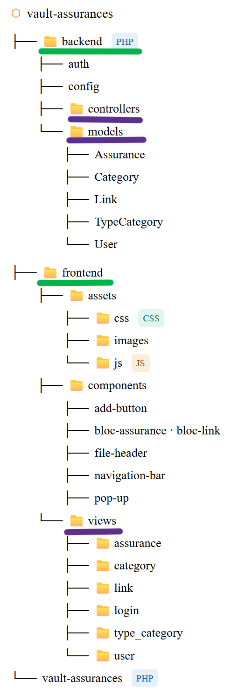

Jolan BERTIN S4A1
jolan.bertin@edu.univ-fcomte.frSavoir-faire techniques
Cette partie permet de présenter et évaluer les savoir-faire techniques employés durant mon stage.Coder intelligemment via une arborescence propre

Savoir-faire élémentaires : Lier un backend avec un frontend d'une application PHP/MySQL (modèle MVC) et Structurer le développement d'une application web et coder intelligemment .

Trace 1 : Arborescence de l'application webAfin de faciliter le développement, la compréhension, la lisibilité et gagner du temps sur le code, j'ai décidé d' opter pour un modèle MVC (Model View Controller). Ce découpage, déjà vu en cours et utilisé lors de projets, m'a grandement facilité le développement de l'application. Une fois la structure clairement établie, le développement n'en est que plus simple. Le principe est le suivant : on découpe le code en 3 parties ( soulignées en violet dans la trace 1).
Tout d'abord, on a la Vue (View) qui est l'interface avec laquelle l'utilisateur interagit, c'est le visuel. De plus, j'ai compartimenté les différentes pages dans des dossiers associées.
Puis, afin que l'application ne soit pas un site vitrine, on a besoin de la partie Modèle (Model) qui gère les données et la logique métier de l'application. De la même manière, j'ai regroupé les différentes logiques pour chaque table du MCD (Modèe Comceptuel de Données) de la base de données.
Toutefois, ces deux parties ne peuvent pas communiquer sans la dernière : la partie Contrôleur (Controller) qui transmete les commandes entre la Vue et le Modèle.
Pour facilité la compréhension, j'ai en plus découpé le projet en deux parties ( soulignées en vert dans la trace 1).
Tout d'abord, le backend qui regroupe les parties Modèle et Contrôleur.
Et le frontend qui contient la Vue ainsi que tous les composants, le style et les différentes images.